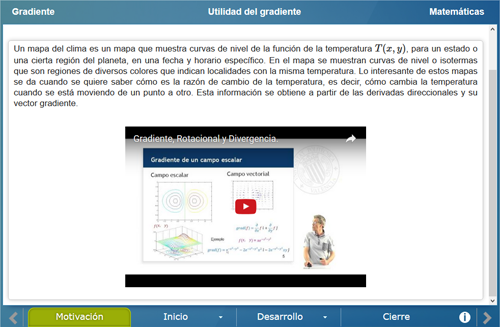
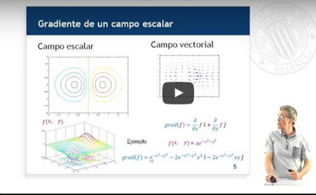
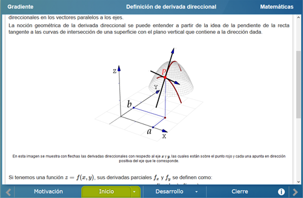
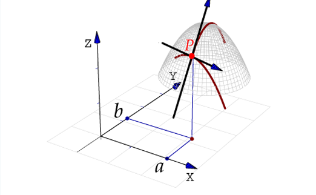
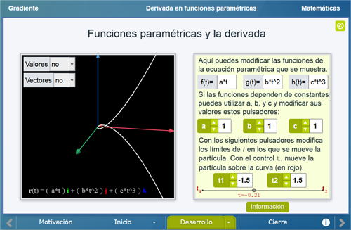
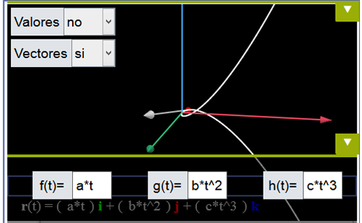
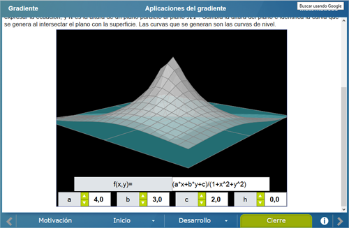
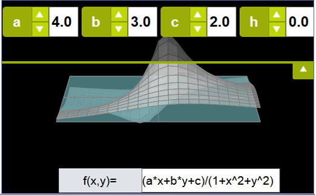

Gradiente
Gradiente
 Gradiente
Gradiente
Un_105_Gradiente
Licenciatura: Matemáticas
Materia: Cálculo vectorial
Unidad: Gradiente
Competencia específica: Aplicar las definiciones y propiedades del gradiente para determinar el máximo cambio en un campo escalar o vectorial.
Definir el gradiente a partir del concepto de derivada direccional, así como mostrar geométricamente su propiedad más importante: determinar máximos cambios en campos escalares o vectoriales.
Se analiza el concepto de gradiente tanto en su forma algebraica como geométrica. Al inicio se hace un recordatorio de lo que es la derivada y las funciones paramétricas, posteriormente se analiza lo que es una derivada direccional y como a partir de esta se construye el gradiente. Finalmente se muestra la utilidad del gradiente en diversas áreas.
Se muestra un video en el cual se describe brevemente lo que es el gradiente y para qué sirve.


En la primer parte se define de forma algebraica lo que es una derivada direccional con respecto a los ejes X y Y, posteriormente se muestra la derivada con respecto a cualquier vector. En la segunda parte se define algebraicamente lo que es el gradiente a partir de haber conocido las derivadas direccionales


Aquí se muestra de forma geométrica lo que es una derivada, una función paramétrica, una derivada direccional y finalmente, el gradiente.


Se da un ejemplo de cómo puede ser utilizado el gradiente en un mapa del clima.


| Diseño del contenido | Elsa Sirenia Vega Camacho (LITE) |
| Diseño funcional | Elsa Sirenia Vega Camacho (LITE) |
| Programación | Elsa Sirenia Vega Camacho (LITE) |
| Asesoría de programación | Victor Hugo García Jarillo (Facultad de Ciencias, UNAM) |
| Diseño gráfico | Ricardo López Gómez |
| Coordinación | Leticia Montserrat Vargas Rocha |
| Diseño funcional | Victor Hugo García Jarillo (Facultad de Ciencias, UNAM) |
| Programación | Victor Hugo García Jarillo (Facultad de Ciencias, UNAM) |
| Diseño gráfico | Francisco Varela Fuentes |
| Coordinación | Leticia Montserrat Vargas Rocha |
| Desarrollo del contenedor | Oscar Escamilla González |
Los contenidos de esta unidad didáctica interactiva están bajo una licencia Creative Commons Reconocimiento-NoComercial-CompartirIgual.
La unidad didáctica fue creada con Arquímedes, una herramienta de código abierto.
La unidad didáctica contiene escenas elaboradas con Descartes, una herramienta de código abierto.
LITE - UnADM 2014